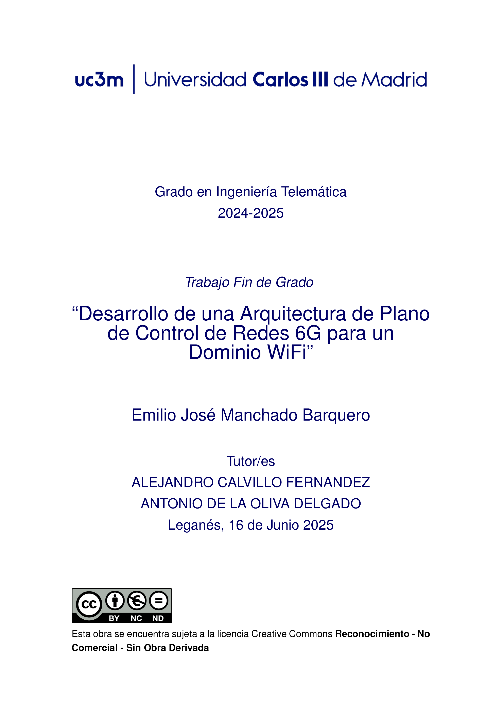

<!DOCTYPE HTML>
<html>
	<head>
		<title>Emilio José Manchando</title>
		<meta charset="utf-8" />
		<meta name="viewport" content="width=device-width, initial-scale=1, user-scalable=no" />
		<link rel="stylesheet" href="assets/css/main.css" />
		<noscript><link rel="stylesheet" href="assets/css/noscript.css" /></noscript>
	</head>
</html>

		<!-- Header -->
			<header id="header">
				<div class="content">
					<h1><a href="#">Emilio José</a></h1>
					<p>Telematics Engineer<br />
					A web cover letter</p>
					<ul class="actions">
						<li><a href="mailto: ejmanchado@gmail.com" class="button primary icon solid">Contact me</a></li>
						<li><a href="assets/pdf/Cv-EmilioJose.pdf" class="button primary icon solid">My CV</a></li>
						<li><a href="#one" class="button icon solid fa-chevron-down scrolly">Learn More</a></li>
					</ul>
				</div>
				<div class="image phone"><div class="inner"></div></div>
			</header>

		<!-- One -->
			<section id="one" class="wrapper style2 special">
				<header class="major">
					<h2><br /> UC3M Student in Double Master's Degree in Telecommunications Engineering and Internet of Things: Applied Technologies </h2>
				</header>
				<ul class="icons major">
					<li><a href="https://www.linkedin.com/in/emilio-jos%C3%A9-manchado-barquero/" class="icon brands fa-linkedin"><span class="label">LinkedIn</span></a></li>
					<li><a href="https://github.com/EmilioJ16/" class="icon brands fa-github"><span class="label">GitHub</span></a></li>
					<li><a href="assets/pdf/Cv-EmilioJose.pdf" class="icon regular fa-user"><span class="label">CV</span></a></li>
				</ul>
			</section>

		</section>
			<!-- Portfolio (Nueva sección) -->
			<section id="portfolio" class="wrapper">
				<div class="inner">
					<header class="major">
						<h2>Portfolio</h2>
						<p>Explore my TFG article</p>
					</header>
					<div class="row">
						<!-- Artículo 1 -->
						<div class="row centered-row">
							<div class="portfolio-item">
								<div class="image-container">
									
									<a href="assets/pdf/Memoria.pdf" class="button overlay">Download PDF</a>
								</div>
								<h3>Development of a Control Plane Architecture for 6G Networks in a WiFi Domain</h3>
								<p>Developing a practical module that automates dynamic queue configuration in WiFi within the PREDICT-6G control plane.</p>
							</div>
						</div>
				</div>
			</section>	
			<section id="two" class="wrapper">
				<div class="inner alt">
					<!-- Academic Background -->
					<section class="spotlight">
						<div class="image"></div>
						<div class="content">
							<h3>Academic Journey at UC3M</h3>
								<p> 
								I hold a Bachelor's Degree in Telematics Engineering from Universidad Carlos III de Madrid (UC3M), 
								where I developed a strong foundation in telecommunications, computer networks, and software engineering, 
								as well as critical thinking and problem-solving skills. My academic training included advanced topics 
								such as network protocols and architectures. Throughout my studies, I gained solid programming 
								experience in C, Python, and Java, along with practical knowledge of Cisco routers, virtualization, 
								and simulation tools such as Matlab. I also worked extensively with collaborative development 
								platforms including GitHub, Linux-based environments, and IDEs such as Eclipse and Visual Studio Code.
								</p>
								<p> 
								Starting this academic year, I am pursuing a Double Master’s Degree in Telecommunications Engineering 
								and Internet of Things (IoT), a program that will enable me to further specialize in emerging 
								technologies, intelligent networks, and next-generation communication systems. My goal is to combine 
								technical expertise with innovation and contribute to the development of scalable, reliable, and secure 
								telecommunication solutions for future digital infrastructures.
								</p>

						</div>
					</section>

					<!-- Experience -->
					<section class="spotlight">
						<div class="image"></div>
						<div class="content">
							<h3>Professional Experience</h3>
								<p>
								I completed an internship at Sistemas y Redes Telemáticas SIRE S.L., a company specialized in 
								telecommunication engineering and critical software development for the railway sector. 
								As a Junior Project Engineer intern, I actively contributed to a software verification project 
								under the European safety standard EN 50128. My main tasks included designing and executing 
								unit tests in C using the VectorCast tool, documenting each test to ensure traceability, 
								performing functional code reviews to meet SIL safety requirements, and assisting with project documentation with DOORS.  
								</p>
								<p>
								This experience allowed me to strengthen my programming skills in C, gain hands-on knowledge 
								of software quality assurance, and understand the importance of compliance in safety-critical 
								environments. Working in a collaborative team under professional supervision also enhanced 
								my teamwork, adaptability, and problem-solving abilities in real-world engineering projects.  
								</p>

						</div>
					</section>
				</div>
			</section>


		<!-- Three -->
			<section id="three" class="wrapper style2 special">
				<header class="major">
					<h2>Emilio José Manchado Barquero</h2>
					<p>Telematics Engineer</p>
					<ul class="icons">
						<li><a href="https://www.linkedin.com/in/emilio-jos%C3%A9-manchado-barquero/" class="icon brands fa-linkedin"><span class="label">LinkedIn</span></a></li>
						<li><a href="https://github.com/EmilioJ16/" class="icon brands fa-github"><span class="label">GitHub</span></a></li>
						<li><a href= "assets/pdf/Cv-EmilioJose.pdf" class="icon regular fa-user"></a></li>
					</ul>
				</header>
			</section>

			

		<!-- Footer -->
			
		<!-- Scripts -->
			<script src="assets/js/jquery.min.js"></script>
			<script src="assets/js/jquery.scrolly.min.js"></script>
			<script src="assets/js/browser.min.js"></script>
			<script src="assets/js/breakpoints.min.js"></script>
			<script src="assets/js/util.js"></script>
			<script src="assets/js/main.js"></script>

	</body>
</html>